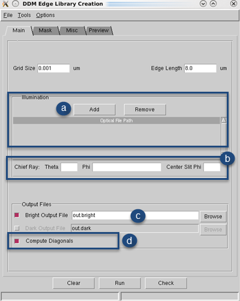
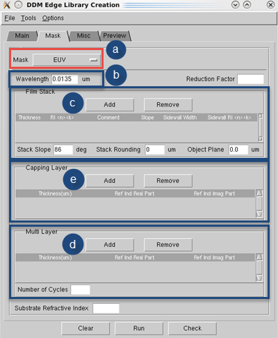

The DDM Edge Library Creation tool, available
in Calibre WORKbench, can be used as a method to create DDM models
for use with EUV optical models.
Prerequisites
An understanding
of the EUV mask stack
Calibre WORKbench
invoked
A remote file
configured for use with Calibre MT or Calibre® MTflex™
Procedure
- In the
Calibre WORKbench main window, choose .
- In the Main tab,
fill in the fields as shown.

- Click Add in
the Illumination section and enter the path to the optical model
file in the text field.
- Fill
in values for Chief Ray Theta and Phi text fields. If the Phi field
is a list, such as in the case of generating through-slit DDM libraries
for global litho model use, put the center phi value of the list
in the Center Slit Phi field.
- Optionally,
set new names for the output file(s).
- Verify
that the Compute Diagonals checkbox is selected
per EUV best practices.
- Switch
to the Mask tab and fill out the fields as
shown.

- Switch
the Mask type from DUV to EUV.
- Set
the Wavelength field to match the value in your optical model.
Note: For all films defined for masksim in Steps 2.c through 3.e (absorber, multilayer,
and capping layer), the first film defined is the film closest to
the substrate.
- In the
Film Stack section:
Click Add and then
define a film in the film stack.
Set the Object
Plane location text field from 0.0 microns to “imageshift” for EUV
purposes.
Set the Stack
Slope and Stack Rounding fields only if your configuration differs
from the defaults.
- If your
film includes a multilayer configuration, click Add in
the Multi Layer section and define them as needed.
- If your
film stack includes one or more capping layers between the multilayer
and the film stack, click Add in the Capping
Layer section define them in this section. T
- Switch
to the Misc tab and fill in the following
optional items if your configuration includes them:
Crosstalk
modeling information
Universal illumination libraries (replaces
the Main tab, Illumination Step 2.a)
- Switch
to the Preview tab and examine the parameters
that the DDM Edge Library Creation tool will run as a DDM library
input file. The Check button can be used
to verify the background and film reflections, which will appear
in the terminal window.
Note: Do not click the Run button
to generate the DDM model, because the GUI uses single-threaded
mode. Siemens EDA recommends that you use a distributed machine
setup to generate the DDM model, as shown in the next step.
- If you
are satisfied with the parameters, save the file (),
then use the new masksim file as input to the following shell command
(note that remote_file is the Calibre MTflex
file and sim_outfile is a log file):
calibrewb -remotefile remote_file -a masksim -i input_file \
-o sim_outfile
Results
Calibre MaskSim runs with the input parameters and produces one
or more DDM libraries according to your specifications.
You can now use these DDM libraries as part of a litho model.